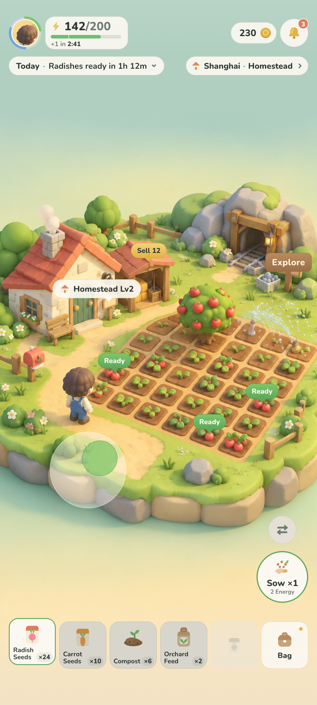
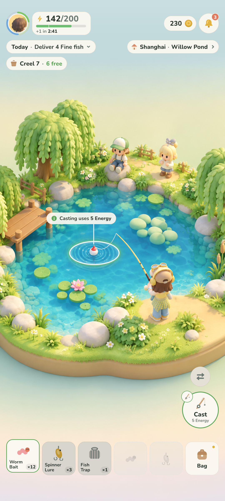
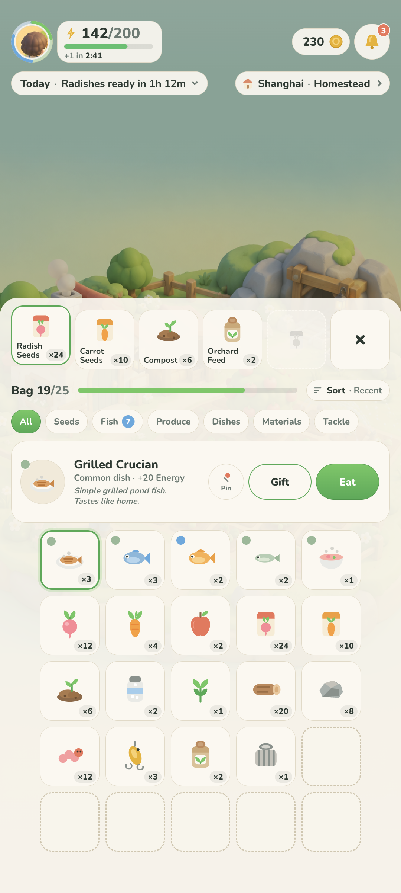
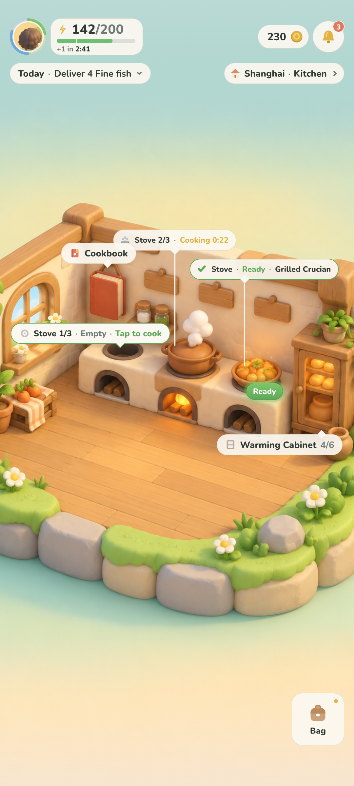
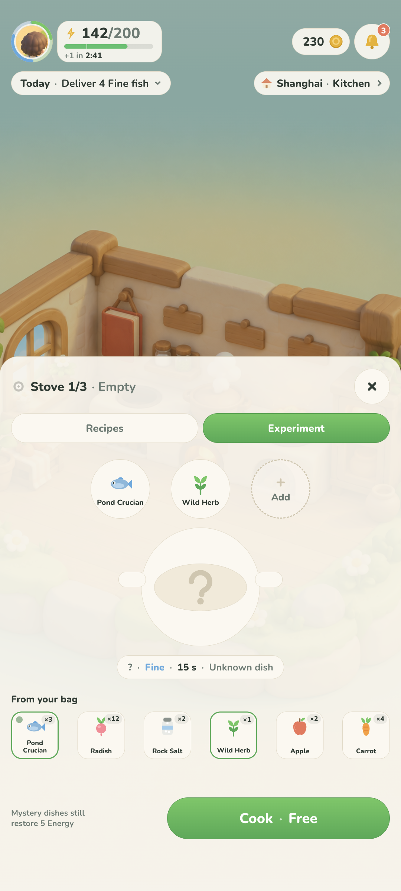

D · Existing anchors (v4 / v3) for comparison
batch 1 · 2026-10-03 · 8 pages · 1080×2400 screenshots scaled to 360 wide

D01 · FARM-1out/v4/FARM-1.png

D02 · FISH-1out/v4/FISH-1.png

D03 · BAG-1out/v4/BAG-1.png
 D04 · EQUIP-1out/v4/EQUIP-1.png
D04 · EQUIP-1out/v4/EQUIP-1.png

D05 · COOK-1out/v3/COOK-1.png
 D06 · ACTION-RADIALout/v3/ACTION-RADIAL.png
D06 · ACTION-RADIALout/v3/ACTION-RADIAL.png
 D07 · COOK-2a-recipesout/v3/COOK-2a-recipes.png
D07 · COOK-2a-recipesout/v3/COOK-2a-recipes.png

D08 · COOK-2b-experimentout/v3/COOK-2b-experiment.png